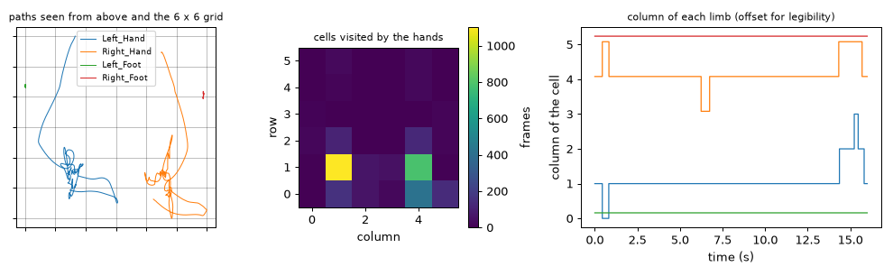

Note
Go to the end to download the full example code.
Physical signals: points in a grid#
Layer 1 of PyEyesWeb holds the signals that are produced straight from the raw frames of a recording, before any statistics
are computed. This tutorial covers the one that takes points: HitCellDetector tells in which cell of a grid each point
is.
- Goals:
locate points in a grid of cells and choose what happens to the points outside it.
- Prerequisites:
- Data:
trial 10 of the example session (sumo squat with weight shift); trial 3 in the exercise.
- Time:
about 10 minutes.
Hit cells: where in the horizontal plane are the hands and feet?#
HitCellDetector divides a rectangle into cells_along_x columns and
cells_along_y rows and says, for each point of a frame, in which cell it lies. The output cells has one row
(i, j) per input point: i is the row (counted along the second coordinate) and j the column (along the first),
starting from 0. Here the points are the hands and the feet of trial 10 seen from above. The recording is in
millimetres: to_units("m") converts it, and the vertical axis of the data is y, so the horizontal plane is
(x, z). See Physical signals for the whole layer.
import matplotlib.pyplot as plt
import numpy as np
from pyeyesweb.datasets import load_qualisys_trial
from pyeyesweb.physical_signals import HitCellDetector
trial = load_qualisys_trial(10, start=0, stop=16).to_units("m")
limbs = ["Left_Hand", "Right_Hand", "Left_Foot", "Right_Foot"]
plane = np.stack([trial.joint(name)[:, [0, 2]] for name in limbs], axis=1) # (frames, 4 points, x and z)
time = trial.timestamps
low, high = plane.reshape(-1, 2).min(axis=0), plane.reshape(-1, 2).max(axis=0)
print("area covered by the limbs (m): x", low[0].round(2), "to", high[0].round(2), "| z", low[1].round(2), "to", high[1].round(2))
detector = HitCellDetector(cells_along_x=6, cells_along_y=6, x_min=low[0], x_max=high[0], y_min=low[1], y_max=high[1])
print(detector.inputs)
print(detector.outputs)
first = detector.process(plane[0], timestamp=time[0])
print("cells (row, column) at the first frame:", {name: (int(row), int(column)) for name, (row, column) in zip(limbs, first.cells)})
area covered by the limbs (m): x -0.62 to 0.26 | z 0.58 to 0.91
Inputs(points: points (?, 2) - 2D points to locate in the grid)
Schema(Output('cells', shape=(None, 2), kind=int, unit='cells'))
cells (row, column) at the first frame: {'Left_Hand': (5, 1), 'Right_Hand': (5, 4), 'Left_Foot': (4, 0), 'Right_Foot': (4, 5)}
run gives one array of cells per frame. A heat map shows the cells the hands visited, and the column of each limb over
time shows when it changes cell: the feet stay in their cells.
cells = np.asarray(detector.run(plane, timestamps=time)["cells"]) # (frames, 4, 2) integers
visits = np.zeros((6, 6))
for limb in range(2): # the two hands
np.add.at(visits, (cells[:, limb, 0], cells[:, limb, 1]), 1)
fig_cells, axes = plt.subplots(1, 3, figsize=(11, 3.4), gridspec_kw={"width_ratios": [1, 1, 1.5]})
for limb, name in enumerate(limbs):
axes[0].plot(*plane[:, limb].T, lw=0.8, label=name)
axes[0].set_xticks(np.linspace(low[0], high[0], 7), minor=False)
axes[0].set_yticks(np.linspace(low[1], high[1], 7), minor=False)
axes[0].tick_params(labelbottom=False, labelleft=False)
axes[0].grid(True, color="k", alpha=0.4, lw=0.5)
axes[0].set_title("paths seen from above and the 6 x 6 grid", fontsize=9)
axes[0].legend(fontsize=7)
image = axes[1].imshow(visits, origin="lower", cmap="viridis")
fig_cells.colorbar(image, ax=axes[1], label="frames")
axes[1].grid(False)
axes[1].set_xlabel("column")
axes[1].set_ylabel("row")
axes[1].set_title("cells visited by the hands", fontsize=9)
for limb, name in enumerate(limbs):
axes[2].plot(time, cells[:, limb, 1] + 0.08 * limb, drawstyle="steps-post", lw=1, label=name)
axes[2].set_xlabel("time (s)")
axes[2].set_ylabel("column of the cell")
axes[2].set_title("column of each limb (offset for legibility)", fontsize=9)
fig_cells.tight_layout()

With clip_values=True (the default) a point outside the rectangle is placed in the nearest border cell; with
clip_values=False the call is INVALID_INPUT instead.
probe = np.array([[low[0], low[1]], [high[0], high[1]], [high[0] + 5.0, low[1] - 5.0]])
print("clip_values=True :", detector.process(probe, timestamp=0.0).cells.tolist())
strict = HitCellDetector(cells_along_x=6, cells_along_y=6, x_min=low[0], x_max=high[0], y_min=low[1], y_max=high[1], clip_values=False)
verdict = strict.process(probe, timestamp=0.0)
print("clip_values=False:", verdict.status.name, "-", verdict.reason)
clip_values=True : [[0, 0], [5, 5], [0, 5]]
clip_values=False: INVALID_INPUT - point out of range (clip_values is off)
Takeaway. HitCellDetector turns the positions of points into grid cells; the grid is yours, in the unit of the data.
Try it#
Run
HitCellDetectoron the hands of trial 3 (load_qualisys_trial(3, start=5, stop=21)) with a grid of 3 x 3 cells over the area the hands cover. In how many frames is the left hand in each column?
Solutions#
Exercise 1. The column is the second number of a cell; np.bincount counts the frames of each column.
other = load_qualisys_trial(3, start=5, stop=21).to_units("m")
hands_xz = np.stack([other.joint(name)[:, [0, 2]] for name in ("Left_Hand", "Right_Hand")], axis=1)
mins, maxs = hands_xz.reshape(-1, 2).min(axis=0), hands_xz.reshape(-1, 2).max(axis=0)
grid = HitCellDetector(cells_along_x=3, cells_along_y=3, x_min=mins[0], x_max=maxs[0], y_min=mins[1], y_max=maxs[1])
hand_cells = np.asarray(grid.run(hands_xz, timestamps=other.timestamps)["cells"])
print("frames of the left hand in columns 0, 1, 2:", np.bincount(hand_cells[:, 0, 1], minlength=3).tolist(), "of", len(hand_cells))
frames of the left hand in columns 0, 1, 2: [843, 757, 0] of 1600
Next steps#
Shape, symmetry and balance: the grid of cells and how points are placed in it.
Physical signals: the features of layer 1.
The next tutorial, Physical signals: images, covers silhouettes and images.